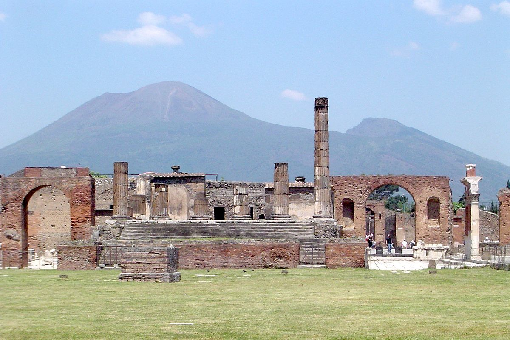

Prepare for Pompeii
- Be prepared either to shelter or to evacuate. Develop an evacuation plan and a sheltering plan for yourself, your family, and others in your household. Review the plans and make sure that everyone understands them. If you haven’t already done so, put together an emergency supply kit.
- If you are told to evacuate: Follow authorities’ instructions if they tell you to leave the area. Though it may seem safe to stay at home and wait out an eruption, doing so could be very dangerous. Volcanoes spew hot, dangerous gases, ash, lava, and rock that are exceptionally destructive.
- If you are told to take shelter where you are: Keep listening to your radio or television until you are told all is safe or you are told to evacuate. Local authorities may evacuate specific areas at greatest risk in your community.

Dos and Don'ts during a volcanic eruption
- Do avoid low-lying areas, areas such as downwind of the volcano, and river valleys downstream of the volcano. Debris and ash will be carried by wind and gravity
- Do stay in areas where you will not be further exposed to volcanic eruption hazards. Trying to watch an erupting volcano up close is a deadly idea.
- Do protect yourself and family by wearing protective gear such as dust masks, and goggles or eyeglasses, make sure to cover as much skin as possible.
- Don't drive in heavy ashfall, doing so will stir up ash that can clog engines, if you do have to drive, keep your windows up and don't turn on air conditioning since it will bring air from outside into your car.
- Don't call someone unless it's an emergency, calling someone may cause telephone traffic and may endanger those who are in actual emergencies
- Don't go outside unless authorities have explicitly told everyone that it's safe to come out of your homes.

Aftermath Management

After a volcanic eruption the danger isn't over yet, we need to know how to deal with the effects of a volcanic eruption such as ash, polllution of water, and the destruction of vegetation.
- When it is safe to go outside, keep your gutters and roof clear of ash as heavy ash deposits can collapse your roof.
- If there is a lot of ash in the water supply, do not use your dishwasher or washing machine.
- Use a mask or a damp cloth and eye protection when cleaning up. Moisten the ash with a sprinkler before cleaning.
- Look for and report broken utility lines to appropriate authorities.
![]()